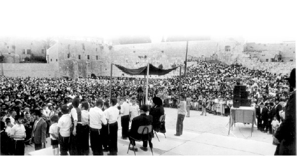

The Torah Scroll for Jewish Children
It is 32 years since the original “Seifer Torah shel Yaldei Yisroel” was written, a unique mivtza, never done before. * The first letter was written on 11 Nissan when the Rebbe entered his 80 th year. * The Rebbe attributed enormous importance to every Jewish child being registered for a letter. When children were in critical condition, the Rebbe would ask whether they have a letter in the Seifer Torah. * 5 Sifrei Torah! Over one-and-a-half million children!

A little boy who lived behind the Iron Curtain asked his father, “What is a Seifer Torah?” His father, who was also born after the Communist Revolution and did not know the answer, replied, “Why are you asking? Where did you hear of such a thing?” The child said that his friend had asked him if he wanted to buy a letter in a special Torah being written for children all over the world.
Something told the father that this had to do with something Jewish, and he said: Ask someone older; perhaps he can answer your question.
The child went to one of the old people and asked his question. The senior took a long time explaining many Jewish concepts that he still remembered. This led to lengthy discussions; later on, the family went to look at the abandoned shul in order to see for themselves what a Torah scroll looks like. They bought letters for the children in the family. That was the first step which led to a great interest in Judaism on the part of the family.
The Rebbe told this story at a farbrengen on 17 Tammuz 5741 as testimony to the power that lies within buying a letter for a child in a Torah scroll. It is a mivtza (campaign) that has been responsible for being mekarev many Yidden to Torah. In certain cases, this simple deed was the catalyst that resulted in significant change in people’s religious observance.
HOW THE CAMPAIGN GOT OFF THE GROUND
The campaign for a letter for every Jewish child in the world in a Torah scroll began at the 11 Nissan 5741 farbrengen to mark the Rebbe’s birthday. It was only a few months after the Rebbe had founded Tzivos Hashem, the worldwide youth movement for Jewish boys and girls under the age of bar/bas mitzva. At that farbrengen, the Rebbe devoted a sicha to Tzivos Hashem and pointed out the power that children have to be mekarev their parents to Torah and mitzvos, “returning the hearts of the fathers through the children.”
The Rebbe said that in the physical world we live in, it is important to do some physical action through which the unity of all the “soldiers in Tzivos Hashem” would be apparent. This action had to be connected with Torah, for it is only through Torah that we can truly unite the Jewish people. This is as we saw at Mattan Torah, “and they camped facing the mountain” – “camped” is in the singular, say our Sages, to denote as one man with one heart.
The Rebbe then announced the new campaign: a special Torah would be written on behalf of every Jewish boy and girl under bar/bas mitzva, to include those already registered in Tzivos Hashem and those not yet registered.
BEGIN THE WRITING ON 11 NISSAN
The Rebbe dedicated three farbrengens in a row to this topic, day after day. He spoke about all aspects of the campaign and went into great detail, delineating the practical steps that needed to be taken. For example, the Rebbe established the price for a letter, one dollar or its equivalent in the local currency where the child lived. The Rebbe also said that the Torah would be written in Eretz Yisroel, the land “which Hashem your G-d seeks, the eyes of Hashem your G-d are constantly upon it from the beginning of the year till the end of the year.” Within Eretz Yisroel, the Rebbe designated the Old City of Yerushalayim specifically, for it expresses the idea of unity as the focus of all Jews.
Not only that, the Rebbe added that the Torah should be written in the Tzemach Tzedek shul, the only building in the Old City of all the shuls there, whose walls and roof are extant from the day it was built until today, despite the war and upheavals the city endured. This “indicates the absence of change and its eternality.”
The Rebbe said the writing should begin immediately on 11 Nissan, and should be completed that same year, a Hakhel year, at least by the following Erev Rosh HaShana, the birthday of the Tzemach Tzedek.
The scribes got to work and finished the first Torah in the month of Av and made the siyum celebration on 20 Av at the Kosel.
UNUSUAL ATTENTION TO EVERY DETAIL
The campaign for a letter in the Torah for every Jewish child was one of the only campaigns to which the Rebbe devoted such attention to every detail.
The Rebbe attributed great importance to the part each child took in buying “his” letter. “It is not enough for the parents to buy letters for their children,” said the Rebbe. “When the child is older, he should buy a letter from his own money and write the personal information himself including his Jewish name, his mother’s name, his birthday and address. In this way, the child will take an active role in buying a letter and be a full partner in this unifying act. Babies who cannot write by themselves will have their parents fill out the form for them. It is important to remember that every action a baby sees or hears, even from his first day, is etched in his memory and can affect him to his final day.”
The Rebbe said a special certificate should be given to each child and even this certificate was given particular attention by the Rebbe. He said it should be treated as an official document with the signature signed properly according to the halachos about Jewish documents. This would give the acquisition of letters an additional importance. When a child received this certificate, he would be able to take pride in it and hang it prominently in his room, show it to his friends, and influence them to do as he did and buy a letter.
When the Rebbe examined the design of the certificate, he said the picture of the Kosel should be printed on the right (instead of the left) and a picture of Kever Rochel should be added on the left.
The Rebbe also instructed that ten adults (in addition to rabbanei Anash and the sofrim involved in the work) should buy a letter for themselves in each of the Sifrei Torah that would be written. This would avoid any halachic issues resulting from the fact that the Torah belonged entirely to children who were not b’nei mitzva.
THE MIVTZA GETS UNDERWAY
“Whenever you want something to be done properly, you need to appoint mashgichim (supervisors) whose job it is to oversee the project so that it is done as it should be.” The Rebbe said this and placed the responsibility for supervising the campaign on the rabbanim, members of the Beis Din Rabbanei Chabad in Eretz Yisroel.
The very next day an urgent meeting was held by the rabbanim in Yerushalayim. Practical discussions took place to carry out the project in an organized manner and in accordance with all of the Rebbe’s instructions. The Rebbe said that the office that oversaw the campaign should be located in Kfar Chabad. The rabbanim chose the scribe, R’ Shlomo Aharon Henig, to write the Torah. High quality parchment and ink were bought that very day and on 11 Nissan 5741 the first letters were written.
After a few weeks, the rabbanim asked another sofer, R’ Shimshon Kahane, to join the work of writing the special Torah along with R’ Henig.
The campaign immediately became known to the public, and thousands of people wanted to register their children. Even before an organized system was put into place, names were collected in all Chabad centers all over the world. The rabbanim held a second meeting in which Rabbi Shmuel Greisman, a shliach to Eretz Yisroel, was asked to undertake the coordination of the campaign. R’ Greisman accepted the challenge and he continues in this position till today.
Throughout the campaign, the Rebbe did not stop encouraging and urging them on. The Rebbe said that since we are about to experience the hisgalus of Moshiach, and Chazal say, “Ben Dovid [Moshiach] will not come until all the souls in Guf are vacated,” certainly many more babies would be born to the Jewish people and they also need letters in the Torah scroll, so a second Torah would be needed. When Moshiach comes, the Jewish children who are referred to as “Moshiach” (as it says, “do not touch My anointed ones” – this refers to the schoolchildren) would have two Sifrei Torah, corresponding to the two Sifrei Torah that every king (including Melech HaMoshiach) needs to write for himself.
HUGE DEMONSTRATION OF UNITY IN HONOR OF THE TORAH OF UNITY
People throughout the world began diligently registering children. They made efforts to reach every Jewish boy and girl. Unprecedented dedication characterized this mivtza, as Anash saw what unusual attention the Rebbe was devoting to it since he spoke about it at every farbrengen.
Time and again, the campaign was highlighted. If a boy or girl passed the Rebbe, they were immediately asked whether they already had a letter in the Torah; parents who asked for a bracha for their children were told to buy a letter in the special Torah which would bring blessing to them. The Rebbe said that even newborn babies should have a letter bought for them, even before they were named, and their name would be sent in afterward to the office in Kfar Chabad.
G’dolei Yisroel of all groups expressed their enthusiasm for the cause by supporting it and buying letters for their descendants in the special Torah to unite Jewish children (see sidebar).
Over the summer, 304,805 letters were bought and the first Torah was completed in record time. The news was publicized all over the world and preparations were made for the siyum that would take place on 20 Av, the yahrtzait of the Rebbe’s father, Rabbi Levi Yitzchok.
The siyum ceremony took place at the Kosel in an unusual, beautiful way. The Rebbe sent a distinguished personal emissary, R’ Zalman Shimon Dworkin, the rav of Crown Heights, to the siyum. R’ Dworkin brought $1200 along with him, the Rebbe’s personal participation in the costs of writing the Torah: buying the parchment, the ink, and paying the scribes. The Rebbe designated another sum to buy two parochos, velvet covers for the Torah, one blue and one white. R’ Dworkin was asked to give another sum to tz’daka. He also bought a bottle of vodka with him that the Rebbe sent especially for the event, as well as a bottle that had been sent to the Rebbe from a Chassidishe farbrengen that took place in Soviet Russia.
Thousands of men, women, and children gathered at the Kosel. It was a variegated crowd from all groups and all ages, all having come to take part in the simcha of the completion of the Torah. This Torah was a joint effort of Jews from all over the world, from all k’hillos and groups. Dozens of Admurim, rabbanim, roshei yeshiva, leaders and public figures graced the affair. The Torah of unity was carried triumphantly with song and dance to the Kosel, before it was brought to its permanent place in the Tzemach Tzedek Beis Midrash in the Jewish quarter.
The joy reached a peak when the Rebbe’s sicha was broadcast live from 770. The crowd was thus able to participate in the Rebbe’s farbrengen. The Rebbe spoke about the special qualities of this Torah which unites the Jewish people, even those whose connection to mitzvos was not apparent. The “Shleimus HaTorah” which was accomplished here, said the Rebbe, affected Shleimus Ha’Am as well, and strengthened Shleimus HaAretz; it is the power of Torah that gives strength in all areas, openly and tangibly.
Upon R’ Dworkin’s return, he was immediately called to the Rebbe’s room and asked for a detailed report of the event. The Rebbe listened and took an interest in everything that had taken place.
At the farbrengen of Parshas B’Chukosai, the Rebbe said that the Torah that had been completed at the Kosel and rested within the walls of the Ir HaAtika (Old City) of Yerushalayim (Atik from the root meaning strong), strengthened and intensified true shalom in the world.
THE WRITING OF THE SECOND TORAH SCROLL
The writing of the second Torah began at the siyum and the sale of letters continued unabated. Numerous people continued to register and unite even more Jewish children. However, the initial enthusiasm had weakened and the rate at which letters were purchased slowed down so that the second Torah was completed only five years later on 20 Av 5746. Once again, a siyum was held with a large crowd who attended an impressive ceremony.
Like the first time, thousands of people crowded at the Kosel and the simcha was shared by all. The Rebbe sent a bottle of vodka and included twenty five-lira coins. This Torah too was brought with song and dance to the Tzemach Tzedek shul. With the completion of the second Torah, the third Torah was begun.
Nine years went by and in Elul 5755, which was also a Hakhel year, the third Torah was completed. For the third time, a beautiful siyum was held at the Kosel and the Aron Kodesh in the Tzemach Tzedek shul welcomed a third Torah. This was followed by a fourth Torah in 5765 and a fifth one completed this past summer.
DOES HE HAVE A LETTER IN THE TORAH?
The Rebbe told the directors of the mivtza to send him, each week, lists of names of children who had bought letters that week. R’ Daniel Dahan of France told the following story in connection with this:
A woman who was acquainted with my family and became involved in Judaism in France went to visit 770. During her stay there, she went for “dollars” for tz’daka. When it was her turn, the Rebbe gave her an additional dollar for her husband and another three dollars for her children. The woman was emotionally overwrought and after she moved on and calmed down she went to the secretariat in order to submit a letter to the Rebbe. Although she had five children, the Rebbe had only given her dollars for three. She ended her letter saying she greatly desired knowing why the Rebbe did this.
In his response, the Rebbe wrote that the number of dollars corresponded to the number of her children who had bought a letter in the Torah. Afterward, to her amazement, she discovered that this was the case. Two of her children still did not have a letter in the Torah for Jewish children.
Another story occurred with a family that went on vacation to Teveria. One of the children disappeared and they frantically began to search for him. They finally noticed that he had fallen into the waters of the Kinneret. They quickly took him to the hospital where the doctors decided to transfer him to another hospital. As the doctors worked on the child they told the parents that even if they saved his life, it would be nothing like it was before.
The family was horrified, and as they tried to digest this awful news a young woman appeared on mivtzaim. The parents told her what was going on and she suggested that they buy a letter for him. The parents agreed and sat down to write a letter to the Rebbe with a request for a bracha. The Rebbe sent his bracha, and at the end of his letter he asked if they had bought a letter for him yet. The parents were happy to be able to respond that they had.
Two days later their son’s condition began to improve. By the end of the week when the young lady visited the hospital again, she did not find the family at the ICU, for the child had been transferred to the regular pediatric ward and eventually recovered fully.
ALL THAT ARE INSCRIBED IN THE BOOK
On Shabbos Parshas Lech Lecha 5742, the Rebbe emphasized how important it is for every Jewish child to be included in the special Torah for Jewish children. “Even if a letter was purchased for a child in a regular Torah, whose letters were also bought by adults, he should also have a letter in this special Torah for Jewish children.” The Rebbe explained the topic at length. Then, in connection to the Sifrei Torah for Jewish children, he referenced Daniel 12:1 where it says, “and it will be a time of distress that never was since becoming a nation until that time, and at that time your people will escape, everyone who is found inscribed in the book.”
In light of this and in light of the current situation in Eretz Yisroel, the director of the project, R’ Greisman, says that the call of the hour for every parent and every child is to register children in a Torah scroll. As time passes, many children are missing the opportunity “to buy the life of their souls,” as the Rebbe put it in one of the sichos.
“We must buy letters for our children as soon as they are born and take every opportunity to register every Jewish boy and girl in our area, to tell everyone who is willing to listen about this, and to make sure that this unity project reaches the homes of every Jewish family.”
Over a million and a half children, from all over the world, have already been united in these Sifrei Torah. The work continues. More children have been born and there are tens of thousands of Jewish boys and girls who are not yet involved.
SIFREI TORAH OF GEULA
A KING NEEDS TWO SIFREI TORAH
It was said previously that the writing of the children’s Torah should be done with great alacrity in a way that the writing will be completed this year, a Hakhel year. When they finish writing the Torah, they will immediately begin writing a second Torah for Jewish children.
Since the coming of Moshiach is associated with the idea of “vacating all the neshamos in Guf,” over the next months surely many boys and girls will be born so that there will be enough children to buy all the letters in the second Torah too.
Jewish children, the tinokos shel beis rabban, are called (in the Torah of Truth) by the term “Moshiach,” as Chazal say, “al tig’u bi’m’shichoi – eilu tinokos shel beis rabban.”
A king (including Melech HaMoshiach) must have two Sifrei Torah as it says, “when he sits on the royal throne he should write a copy of this Torah,” “two Sifrei Torah, one for his treasury and one that goes and comes with him.” These two Sifrei Torah of Jewish Children, who are called by the term “Moshiach,” are (like) the two Sifrei Torah of Melech HaMoshiach.
WRITING A TORAH – A SEGULA FOR HASTENING THE GEULA
May the writing of the Sifrei Torah shel Yaldei Yisroel who are called “Meshichoi,” hasten the true and complete Geula through Moshiach Tzidkeinu even more.
May each and every Jew soon merit learning the Torah of Moshiach from the mouth of Moshiach. As the Shnas Hakhel emphasizes – the king reads the Torah in the Beis HaMikdash in a way of “gather the nation, men, women, and children etc.”
Writing the Torah in the Old City of Yerushalayim within the walls will be an immediate preparation for the fulfillment of the promise “Hashem who builds Yerushalayim,” including the walls of Yerushalayim, as it says, “and I will be for her a wall of fire around,” and until the fulfillment of the promise “prazos teisheiv Yerushalayim” with the coming of Moshiach speedily in our days.
SPECIAL HINTS
For the siyum of the second Torah scroll, the Rebbe sent a special bottle of vodka and included twenty five-lira coins. Many Chassidim felt that there was a special symbolism in this; the twenty coins represented the date, 20 Av, the day of the siyum, and a five-lira coin was chosen to represent the five books of the Torah. A lion was engraved on the coin which represents the mazal of the month of Av.
WHAT THE REBBE SAID ABOUT THE SIFREI TORAH SHEL YALDEI YISROEL
CHILDREN – DON’T MISS OUT!
Regarding buying letters for Jewish children there are some more details:
Boys and girls who are soon to be bar/bas mitzva, even on 12 Nissan, can still utilize the final day (11 Nissan) that they are still not yet bar/bas mitzva and quickly buy a letter.
For as long as they are still not bar/bas mitzva, they can participate in the writing of the special Torah that is being written by and in the merit of Jewish children who are not yet bar/bas mitzva. But after they are bar/bas mitzva, they cannot participate in the writing of this Torah (only in a Torah written by adults) and so they should take advantage of their special opportunity.
All this is in addition to the general idea of “those with alacrity do mitzvos at the earliest opportunity,” for which reason all Jewish children (not just those who are reaching bar/bas mitzva soon) should hurry and buy a letter in the Torah for Jewish children as soon as possible.
THE CHILDREN’S INVOLVEMENT
In order to endear the buying of letters in the Torah to the children, the children themselves should be involved:
In addition to the amount of money being their own (from gifts they received from their parents etc.) they themselves should send the money to the Vaad Rabbanei Anash in Eretz Yisroel by putting the money into an envelope and by enclosing a letter in their handwriting with their name, mother’s name, their age, and by writing their address on the envelope and sending it to Eretz Yisroel.
In addition to the dearness that will result from their being involved in this, this will constitute and increase in their activities (in matters of k’dusha), since the act of a child is considered a valid act.
Especially since the writing of a minor is with great effort (as we see), with this he will exert himself in a matter of k’dusha – as in this case – participating in the writing of a Torah of Jewish children.
This should be done even if, after all the effort, the child’s handwriting is illegible, as this is in a manner of “skipping over me – with love,” i.e. this itself arouses great endearment Above, as in the general idea of “Yisroel is [like] a young lad, and I love him.”
Nevertheless, the parents should include a letter along with their child’s letter in which they explain the details that the child wrote (name, mother’s name, age).
S.Z. Levin. "The Torah Scroll for Jewish Children." Beis Moshiach, no. 874 (March 21, 2013).